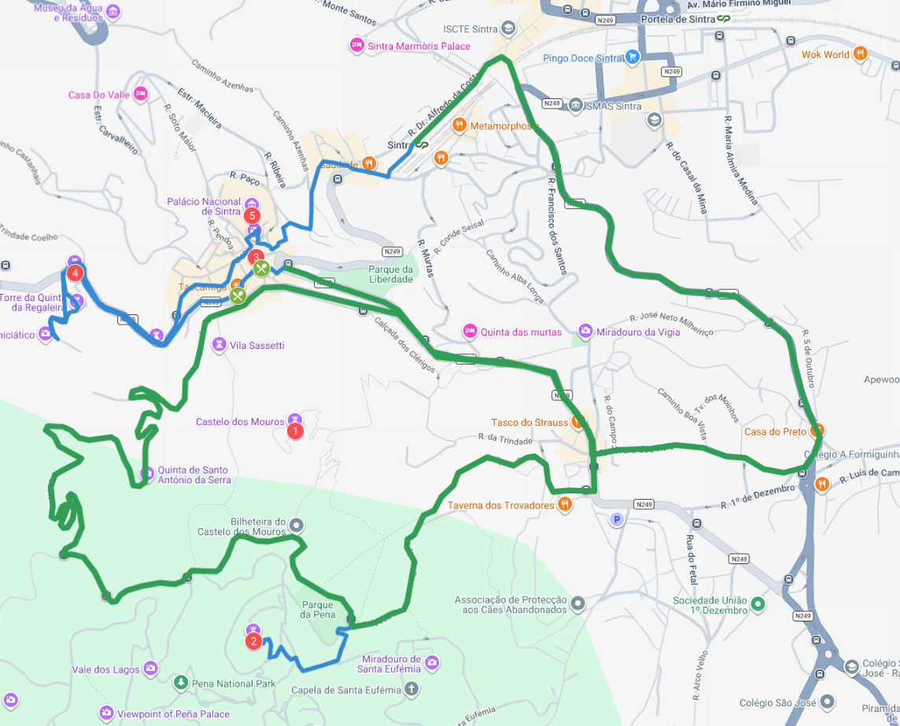

🇵🇹
Lisboa 2026 · City Break
DAN 3
Sreda · 18. november 2026
Sintra: kraljeva pravljica in skrivnostni vrtovi
● V ŽIVO IZ SINTRE
🌤️
-- °C
Pridobivam trenutno vreme ...
Občutek -- °C☔ -- %💨 -- km/h
Preverjam, kaj nam danes pripravlja Lizbona ...
Današnja pot

Sintra · palače, vrtovi in staro mesto
Javni prevoz
Peš pot
Točke dnevaCelodnevni izlet iz Lizbone v Sintro
01
Palácio da Pena
Barvita romantična palača visoko nad Sintro.
🏰 kraljeva pravljica
02
Piriquita · travesseiros in queijadas
Znamenita slaščičarna in klasični sintrski sladici.
🥐 sladki postanek
03
Quinta da Regaleira
Palača, skrivnostni vrtovi, podzemni prehodi in iniciacijski vodnjak.
🌿 skrivnostni vrtovi
04
Centro Histórico + Palácio Nacional de Sintra
Sprehod skozi staro jedro in pogled na palačo z belima dimnikoma.
🏛️ zgodovinsko središče
05
Fado, vino in lizbonski večer
Povratek v Lizbono in večerni zaključek ob glasbi ter vinu.
🎶 večerni zaključek
Iz programa potovanja
Sintra: kraljeva pravljica in skrivnostni vrtovi
Po zajtrku se z metrojem in vlakom odpravimo v Sintro, nato z avtobusom proti Palácio da Pena. Barvita palača visoko med gozdovi nas popelje v svet kraljeve domišljije, teras, stolpov in reprezentančnih prostorov. Po ogledu se spustimo v staro središče mimo znamenite slaščičarne Piriquita.
Nadaljujemo do Quinta da Regaleira, kjer palačo dopolnjujejo vrtovi, kamnite kulise, podzemni prehodi in znameniti iniciacijski vodnjak. Po ogledu sledi kosilo, nato kratek sprehod po zgodovinskem središču in zunanji pogled na Nacionalno palačo z velikima belima kuhinjskima dimnikoma.